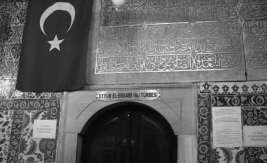

Bizanslılar, imparatorluklarının payitahtı ve idare merkezi olan muazzam beldelerinin etrafını çepeçevre kuşatmış olan kuvvetli surlara çok güveniyorlardı. Ve bu surları adeta semavî bir kuvvet gibi telakki ederek, onun sinesinde büyük bir emniyet içinde yaşayan beldelerine, Allah’ın eline tevdi (emanet) edilmiş olan şehir diyorlardı. Çünkü aşılması cidden çok müşkül olan bu taş surlar, onları birçok defa büyük felâketlerden kurtarmıştı.
Bu şehir, teessüs ettiği (kurulduğu) günden itibaren, Yunanlılar, Bulgarlar, İranlılar, Avarlar, İslâvlar, Varenler, Araplar, Lâtinler ve Türkler tarafından tam yirmi dokuz defa muhasara altına alınmıştı. Fakat bu muhasaraların ancak yedisi muvaffakiyetle neticelenmiş, diğerleri akim (neticesiz) kalmıştı.
Bizans’ın serveti ve san’at eserlerinin kıymet ve şöhreti dillere destan olmuştu. Onun için her devlet ve millet servet ve san’at kaynağını ele geçirmek istiyor, bunun içinde vakit vakit Bizans surlarını aşmak için ordular gönderiyordu. Bilhassa Araplar, Konstantaniye diye tesmiye ettikleri bu beldeyi zapt etmeyi çok arzu ediyorlardı. Bu maksatla, hiçbir fedakârlıktan çekinmiyorlardı. Çünkü Resûlullah Efendimiz’in:
“Litüf tühannel Kostantiniyete Felenimel Emirü Emiruha Velenilmel ceyşü Zalikel ceyş.”
Hâdisi Şerifindeki emri celili yerine getirmek istiyorlardı. Bu maksatla Konstantaniye beldesi Araplar tarafından yedi defa muhasara edilmişti. Fakat bu muhasaraların hepsi, akametle neticelenmişti.
Arapların bu yedi seferlerinden birincisi, Resûlullah Efendimiz’in Halifesi, Hazret–i Osman zamanında Bizans surlarını muhasara etmişti. Fakat bu ordu, hem kifayetsiz ve hem de muktedir kumandanlara malik olmadığı için bir müddet sonra muhasarayı ref’ederek (kaldırarak) geri çekilmek mecburiyetini hissetmişti.
Emevî Saltanatının birinci hükümdarı olan Muâviye bin ebu Süfyan, birinci İslâm ordusunun muvaffakiyetsizliğini tamir etmek için, ondan daha mükemmel bir ordu tertip etti. Bu orduyu, o tarihte Emevîlerin en maruf (bilinen) kumandanlarında Süfyan Bin Avf’ın idaresine verdi. Aynı zamanda, Ashab–ı Kiramdan Hazret–i Hâlid Ebu Eyüb–ü Ensarı, İbn–i Abbas, İbn–i Ömer, İbn–i Zübeyr gibi zevatı muhteremeyi Medine’den Şam’a getirterek orduya terfik ederek (yanına katarak) İstanbul’a gönderdi. Hicretin, 48’inci ve 49’uncu senelerinde Bizans surları önünde çetin bir harbe girişen bu ordunun mübarek şehitlerinden biri de Hazret–i Hâlid’di.
Hazret–i Hâlid, Ashab–ı Kiramın en güzidelerindendir. Resûlullah Efendimize evvela mihmandarlık, sonrada alemdarlık (bayraktar) şerefini ihraz etmiştir (kazanmıştır). Ensar–ı kiram arasında, mebrukiyetinin (tebrik) derecesi çok yüksek olan bu zatı şerifi layıkı veçhile anlayabilmek için, Resûlullah Efendimiz’in asr–ı saadetine dönmek ve o devirdeki hadisatı, şöylece bir gözden geçirmek lâzım gelir.
